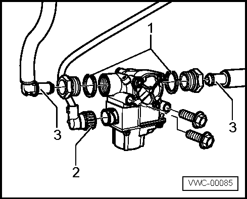
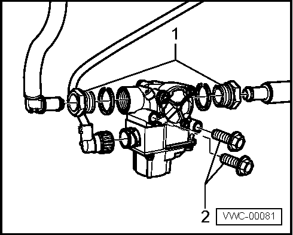
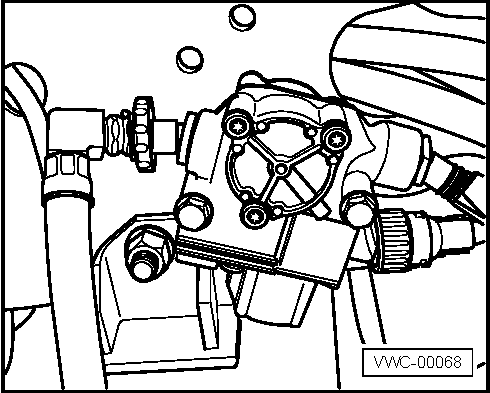

Informações Importantes
Remoção |
 |
Nota Consultar o manual do proprietário quanto ao procedimento para bascular a cabine |
- Girar a roda no sentido oposto ao lado a ser trabalhado.
- Destravar os anéis (1) entre as válvulas e as conexões.
- Remover o conector do módulo ABS (2).
- Remover as conexões VOSS de entrada e saída da válvula (3).

- Remover as porcas (1).
- Remover os parafusos (2) de fixação da válvula.

|
Nota - Quando se soltam os parafusos de fixação da válvula, as porcas dos parafusos que se encontram do lado de dentro da chassi também se soltam. - Observar para não perder as porcas. |
- Remover a válvula.
Instalação
 |
Atenção! Instalar a válvula moduladora com o conector do módulo ABS voltado para a frente do veículo. |
A instalação é realizada pela sequência inversa a da remoção, observando o seguinte:
- Posicionar os anéis e as porcas dentro da válvula moduladora sem aperto.
|
Nota Verificar o estado de conservação dos anéis de segurança, se necessário trocar |
- Instalar a válvula moduladora no chassi.
- Apertar as porcas VOSS na válvula.
- Instalar as mangueiras na conexões VOSS.
|
Nota Para instalar as mangueiras nas conexões VOSS basta empurrá-las até que elas se encaixem. |

|